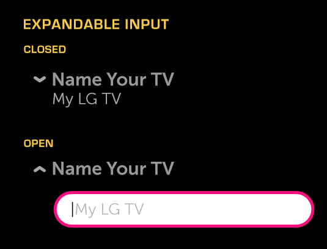

Expandable Input
About
An Expandable Input is an expandable control that contains a single-line input field.
API Reference
Behavior and States
Behavior
The Expandable Input has two states, open and closed. When closed, the control consists of a title describing the input’s function and a text item displaying either the current selection or the default selection. The default will vary depending on the options that are available in the open state.
The control is opened by focusing and then selecting it. When the control opens, the content below is pushed down to make room for the entire height of the control in its open state.
When the expandable control is open, the layout consists of a divider control (using the same title as in the closed state) and a single-line input field under the divider. When closed, the expandable input displays the title on the first line and the value on the second line.
States
The control will be in one of the following states at any given time:
Closed (Normal)
There has been no interaction with the button, but it is available for use.
Closed (Focused)
The control is being hovered over or has the focus from 5-way navigation.
Open
The control has been opened and changes may be made to the input.
Sizing
The width of the expandable control automatically scales to fit the container.
Illustration
